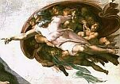

Las religiones judeocristianas han proclamado a los cuatro vientos sobre la existencia de un Dios lleno de amor, creador de este universo cuyo nombre es Jehová o Yahvé, así como la de un ente malvado denominado Satanás o el Diablo quien es el antitesis de su amoroso Dios Jehová y causante de todo lo malo que ocurre y ha ocurrido en este universo.
Debiendo tener muy presente el hecho de que la Biblia, desde el punto de vista religioso es el único libro cuyo contenido es absolutamente verdadero y, además, lo es también el único que contiene toda la verdad en cuanto a los orígenes, cualidades y personalidad de estas dos entidades - Jehová y Satán - cualquier dato que de éstos se hallare en algún otro escrito, deberá ser considerado como apócrifo. Tampoco es un secreto para nadie el hecho de que la misma Biblia está plagada de violencia, agresiones y perversidades en contra de este universo y de quienes lo poblamos, así que fundamentado en este gran libro es que se va a exponer toda clase de atrocidades que han cometido los citados seres, como ya lo dije, en contra de la tierra y sus pobladores, en virtud de que solamente expone situaciones ocurridas en este planeta.
Antes que nada, permítame exponer el concepto literal de ATROCIDAD, para que debidamente quede definido:
“Acto de gran crueldad o de crueldad extrema” (Diccionario Larousse 1995).
Ahora si, vamos a enumerar las ATROCIDADES que, según la Sagrada Biblia, han llevado a cabo estos protagonistas del plano espiritual.
Jehová
El Dios de los Hebreos, a quien sus adoradores describen como un Dios misericordioso, sabio y sobre todo amoroso, veamos que más dice la Biblia sobre él:
“Y meteránse en las cavernas de las peñas, y en las aberturas de la tierra, por la presencia espantosa de Jehová, y por el resplandor de su majestad, cuando se levantare él para herir la tierra”.“Así ha dicho Jehová: He aquí yo levantaré sobre ti el mal de tu misma casa, y tomaré tus mujeres delante de tus ojos, y las daré á tu prójimo, el cual yacerá con tus mujeres a la vista de este sol”.Enviaré pues sobre vosotros hambre, y malas bestias que te destruyan; y pestilencia y sangre pasarán por ti; y meteré sobre ti cuchillo. Yo Jehová he hablado.Mas Dios los herirá con saeta; De repente serán sus plagas.
Es este el concepto que también se debiera tener de Jehová, fundamentado en la Biblia, el cual muchos fieles ignoran y quienes no lo hacen, le dan insignificancia o lo justifican.
Sus atrocidades
Ahora veremos sus atrocidades, todas ellas fundamentadas en la Biblia:
Un Diluvio Universal que acabó con muchas criaturas inocentes tales como, animales, niños (¿existió alguna vez una población mundial de infantes perversos?) y sobre todo bebés y fetos: Génesis 7-8; 2 Pedro 2:5.
Destrucción total de Sodoma y Gomorra, sigo preguntando ¿Existieron alguna vez grupos étnicos cuyas poblaciones infantiles eran perversas en su totalidad? Génesis 19; 2 Pedro 2:6; Judas 1:7
Causa directa de la transformación en Estatua de Sal de una mujer inocente (la esposa de Lot): Génesis 19:26.
Asesinato de un hombre que se negaba a tener relaciones sexuales con su cuñada viuda, y para evitarlo se masturbaba: Génesis 38:1-10 [1]
Plagas, llamadas “Maravillas” por el propio Jehová, hacia seres inocentes de Egipto, tales como ancianos, mujeres, animales y niños (¿Tiene caso sacrificar niños?): Éxodo 7:1-14, 9:14-16, 10:1-2, 11:7; Judas 1:5.
Aniquilación (“maravilla”) hacia todos los primogénitos en la tierra de Egipto, incluyendo niños: Éxodo 12:29; Judas 1:5.
Causa directa del extermino de un ejército egipcio, mediante su inmersión en las aguas del Mar Muerto: Éxodo 14:21-28; Judas 1:5.
Desastre por medio de Granizo en campos egipcios: Éxodo 9:22-25.
Plaga hacia seres humanos: Números 11:33.
Lepra hacía una mujer (Miriam) por intrigar contra Moisés: Números 12:1-10.
Abrir la Tierra, mediante Moisés, para tragarse a una población entera (con todo y sus niños… ¿perversos?) por rebeldía: Números 16:27-33.
Genocidio de 250 hombres por incineración: Números 16:35.
Genocidio de 14,700 personas por medio de una plaga mortal: Números 16:49.
Ataque mortal de serpientes de fuego hacia pobladores israelitas (¿cómo no se le ocurrió a Hitler?): Números 21:6.
Genocidio de 24,000 personas por medio de una plaga mortal: Números 25:9-11.
Apoyo logístico para masacrar a Sehón, sus hijos, y su pueblo y después saquearlos: Deuteronomio 2:32-35.
Apoyo logístico para masacrar a Og y a todo su pueblo: Deuteronomio 3:2-3.
Apoyo logístico para masacrar y saquear a 6 pueblos: Deuteronomio 20:1-21:3.
Intimidación masiva hacía el pueblo israelí: Deuteronomio 28 (todo el capítulo).
Posesión del cuerpo de un hombre (Sansón) para despedazar a un león cachorro: Jueces 14:5-6.
Posesión del cuerpo de un hombre (Sansón) para masacrar a 30 hombres: Jueces 14:19.
Aplicación de tumores en las ingles de los Filisteos (plaga): 1 Samuel 5:6-9.
Genocidio de 50,070 hombres de Beth-Semes: 1 Samuel 6:19.
Apoyo logístico a Josué para exterminar a los Amorrheos (5 pueblos) y sus reyes, además a los pueblos de Maceda, Libna, Lachis, Gezer, Eglón, Ebrón, Debir. Desde Cades-barnea hasta Gaza y de Gosén hasta Gabaón, todo esto incluyendo el clásico saqueo: Josué 10 (todo el capítulo).
Aplastamiento con grandes trozos de granizo de un número indefinido de hombres: Josué 10:10-11.
Asesinato de los “hombres más robustos” de Israel: Salmos 78:21-31.
Castigo con sequía a Israel por 3 años consecutivos a causa de un acto de Saúl: 2 Samuel 21:1.
Asesinato de dos varones justos: 1 Reyes 2:32.
Ordena a Jehú asesinar a sobrevivientes de Achâb, mediante Elías: 2 Reyes 10:17.
Asesinato de Er, hijo de Judá: 1 Crónicas 2:3.
Apoyo logístico a los Hijos de Rubén y de Gad para arrasar con cuatro pueblos: 1 Crónicas 5:18-22.
Apoyo logístico a David para herir a los Filisteos y a su ganado: 1 Samuel 23:2-5.
Mas Apoyo logístico a David para herir a los Filisteos: 2 Samuel 5:23-25.
Asesinato de Uzza: 2 Samuel 6:7.
Ordenar daños a la casa de Achâb por venganza a Jezabel: 2 Reyes:9:7.
Asesinato de Joachaz mediante una terrible y cruel enfermedad: 2 Crónicas 21:17-19.
Aplicación de lepra a Azarías: 2 Crónicas 26:20.
Amenaza de destrucción al pueblo de Israel: Isaías 10:20-27.
Amenaza a Pashur de muerte, destrucción y saqueo a sus seres queridos y pueblo, por haber herido a Jeremías: Jeremías 20:1-8.
Agresión contra dos falsos profetas: Jeremías 29:21.
Derivado de la envidia, amenaza de destrucción, muerte y saqueo al pueblo de Jacob (Sión y Samaria): Amós 6.
Agresión, con ceguera y aturdimiento, a caballos de Judá y, con locura, a sus jinetes: Zacarías 12:4.
Aplicación de plaga desconocida contra los pueblos contrincantes de Jerusalém: Zacarías 14:12.
Intimidación por medio de amenaza de plaga hacia Egipcios: Zacarías 14:18.
Asesinato de un bebé como castigo a su padre (David), a quien al parecer, le tuvo sin cuidado: 2 Samuel 12:1-19.
Genocidio de 70,000 Israelitas por medio de una peste: 2 Samuel 24:15.
Aniquilación de 50 hombres con fuego del cielo: 2 Reyes 1:10-12.
Aplicación de ceguera a los Sirios: 2 Reyes 6:18-19.
Asesinato con lepra, a Azarías (Rey): 2 Reyes 15:3-5.
Genocidio de 185,000 Sirios: 2 Reyes 19:35.
Órdenes de masacrar a “viejos, jóvenes y vírgenes, niños y mujeres hasta que no quede uno…”: Ezequiel 9:4-6
Aniquilación de seres humanos: Deuteronomio 2:15.
Destrucción de las tiendas de Jacob y las fortalezas de la hija de Judá: Lamentaciones 2:2.
Destrucción masiva de Israel: Lamentaciones 2:5.
Destrucción masiva de los Cananeos: Números 21:3.
Destrucción de los anaceos: Deuteronomio 2:12.
Asesinato de hombres que fueron en pos de Baal-peor: Deuteronomio 4:3.
Aniquilación y aplicación de epidemia de hemorroides al pueblo de Assod: 1 Samuel 5:6.
Asesinato con lepra de un rey: 2 Reyes 15:5.
Envío de tropas de Caldeos, Sirios, Moabitas y Ammonitas a destruir Judá: 2 Reyes 24:2.
Genocidio con epidemia de 70,000 hombres de Israel: 1 Crónicas 21:14.
Órdenes de destrucción a Jerusalém (y se llevan a cabo): 1 Crónicas 21:15.
Aplicación de lepra a Uzzías (Rey) : 2 Crónicas 26:20.
Asesinato de Ezechîas, por ingratitud: 2 Crónicas 32:24-25.
Da órdenes de exhumar cadáveres: Jeremías 8:1.
Destrucción de poblados del Valle del hijo de Hinnom: Jeremías 19.
Amenaza de destrucción de su pueblo a Zecheddías, rey de Judá: Jeremías 21.
Travesuras pesadas y de mal gusto a Jonás: Jonás 3-4.
Órdenes de destrucción y muerte a los pobladores de Merathaim: Jeremías 50:21.
Aniquilación total del ejército de Sisara: Jueces 4:13-15.
Asesinato de Jabín y destrucción de Canaán: Jueces 22-24.
Amenaza de destrucción a Babilonia: Jeremías 51:52-58.
Destrucción de Samaria: Amós 3:9-15.
Amenazas de destrucción y castigo: Amós 9:1-2.
Si a las anteriores le agregamos el hecho, redactado en el Nuevo Testamento y base fundamental de éste, de haber enviado, con conocimiento de causa a su Hijo, a la Tierra a sufrir una tormentosa muerte, con la finalidad de demostrar Amor. Pues estaríamos hablando de una barbaridad más; el hecho de derramar sangre inocente, al parecer, es considerado como un remedio para Jehová.
Satán
Muchos teólogos y casi todos los fieles religiosos coinciden en afirmar que Satanás es el causante de todo lo malo en este universo, de las enfermedades y de la muerte, sin embargo, ¿es bíblicamente Satanás dueño de tales atribuciones?, la referencia bíblica de tales afirmaciones, no existe o es, desde un punto de vista estricto, inadecuada y, desde el punto de vista lógico, absurda. El supuesto origen de toda la maldad atribuido a Satanás se encuentra redactado en el Génesis, capítulo 3. A continuación invito a leer y analizar, desde una perspectiva razonablemente imparcial, el pasaje correspondiente:
¿En algún momento de este pasaje se menciona que esta serpiente sea el propio Satán? ¿Alguna vez se dijo que NO se trataba de un animal? ¿Satán se desplaza arrastrándose y se alimenta de polvo? ¿Quién fue el que aplicó las medidas correctivas? ¿A quién se iba a perjudicar colocando tan cerca al pecado y al potencial pecador, uno del otro? ¿Quién cometió tal descuido? ¿Quién se encolerizó y así enfrentó este inocente hecho?
Ahora vea el versículo relacionado, según la Teología, con este pasaje, en el cual se basa la supuesta responsabilidad total de Satanás en el Pecado Original.
Y fue lanzado fuera aquel gran dragón, la serpiente antigua, que se llama Diablo y Satanás, el cual engaña á todo el mundo; fue arrojado en tierra, y sus ángeles fueron arrojados con él.
Mejor, razónelo usted mismo.
Como ya se dijo, existe la creencia generalizada de que Satanás es el causante de la maldad y así lo describe, aunque escasa y confusamente, la Biblia tal como sigue:
“Y MOSTROME a Josué, el gran sacerdote, el cual estaba delante del ángel de Jehová; y Satán estaba a su mano derecha para serle adversario”.
“Porque no seamos engañados de Satanás: pues no ignoramos sus maquinaciones”.
“Y entonces será manifestado aquel inicuo, al cual el Señor matará con el espíritu de su boca, y destruirá con el resplandor de su venida; A aquel inicuo, cuyo advenimiento es según operación de Satanás, con grande potencia, y señales, y milagros mentirosos…”
Vosotros de vuestro padre el diablo sois, y los deseos de vuestro padre queréis cumplir. Él, homicida ha sido desde el principio, y no permaneció en la verdad, porque no hay verdad en él. Cuando habla mentira, de suyo habla; porque es mentiroso, y padre de mentira.
Sus atrocidades
Bien, ahora, para poder confirmar razonablemente los anteriores atributos de este ser diabólico, veamos lo que la propia Biblia nos dice de las maldades, engaños y sobre todo atrocidades cometidas por este ente maligno, llamado Satanás:
Provocación de una molesta sarna corporal a Job: Job 2:7.
Estimable lector, créame que, sinceramente, he buscado por toda la Biblia más actos perversos y crueles por parte del Maligno sin haber encontrado algún otro más. Es más, he consultado a través de la World Wide Web con asociaciones de estudios bíblicos, tales como http://esfuerzocristiano.com, http://ministeriocristiano.tripod.com, http://iglesia-centro-cristiano.com, http://serviciocristiano.com, http://uca.edu.sv (Universidad Cristiana), etcétera; y solamente he recibido dos respuestas, una de ellas con las únicas referencias bíblicas que ya expuse y la otra que me informa lo que de antemano sospechaba… ¡Textualmente no hay ningun otro acto de atrocidad específico de Satán, redactado en la Biblia!
En las consultas personales con creyentes, a través de los chats cristianos y personalmente con individuos religiosos, me han comentado que aunque esta escasez de maldades en la Biblia sea un hecho contundente, quien crea en la Sagrada Escritura debe, forzosamente, razonar el hecho de que Satanás es un ser perverso y nocivo para el ser humano y para las buenas intenciones de Jehová Dios (mismas que vienen contenidas en el Apocalipsis o libro de las Revelaciones, el cual recomiendo leer a quién tenga esa impresión de “las buenas intenciones futuras de Dios”, total, no tiene nada que perder). Sin embargo este razonamiento, no debe surgir sin las bases adecuadas; es decir, si Satán es el “Malo” en esta película llamada Biblia, entonces deben estar registradas las escenas sus maldades, ¿conoce otra forma diferente de deducción? No considero correcto la sugerencia espontánea de afirmar que Satanás es así, solo porque sí, esto es intransigencia.
Conclusión
Para desgracia de los fieles creyentes de ambas deidades, desde un punto de vista bíblico, ni Jehová es tan amoroso como generalmente se cree, ni mucho menos Satanás es tan malo y perverso. Desde una postura racional, la propia Biblia refleja al Diablo más como un enemigo de Jehová que como el ser que las religiones judeocristianas han hecho creer a sus fieles a través de la historia. Si Usted es un creyente, llámese cristiano o satanista y después de haber leído, comprobado y, sobre todo, razonado lo que anteriormente le expuse, le dejo a su valioso criterio las siguientes preguntas.
¿Quién cree usted que sea el verdadero enemigo de la humanidad? ¿está usted adorando al dios correcto? ¿están justificadas sus aportaciones (limosnas) a la religión? ¿en verdad cree usted que sean posibles estas historias y estas entidades?
En mi caso particular yo no creo absolutamente en nada de estos seres mitológicos, el tema lo considero meramente cultural y nada más, sin embargo después de haber leído la Biblia, y haber hecho una balanza para colocar cada una de la atrocidades de Jehová (el Bueno) y Satanás (el Malo); creo que ésta (la Biblia) sugiere más una inclinación de la balanza de crueldades hacia el lado de Jehová, al tiempo que sugiere una total insignificancia de protagonismo hacia Satanás, con lo que deduciría que considerar este libro como algo verdadero, sería vivir con una perspectiva equivocada de la vida y además, perder el tiempo.
Notas
Volver a la sección Examinando las religiones
Comentarios
Comments powered by Disqus